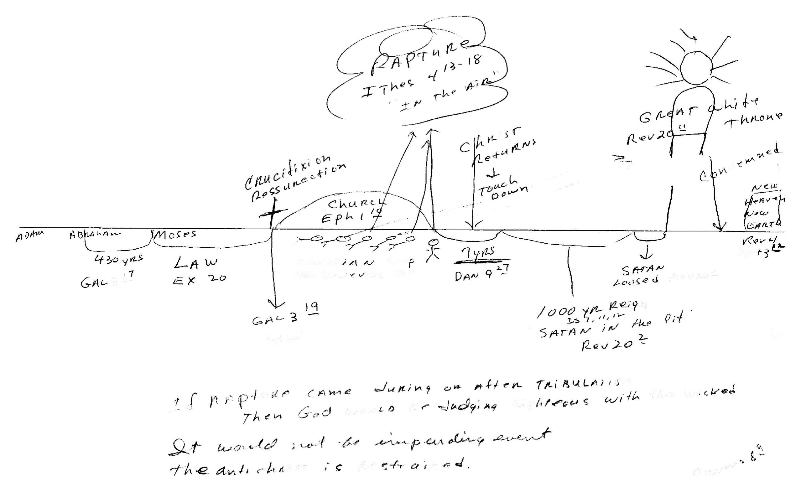

Ephesians
Read each chapter first, then work through Jim’s questions for that chapter. His wording is unchanged, including punctuation and typographical quirks.
I. The Calling of the Church (chaps. 1-3)
A. Prologue (1:1-2)
B. Praise for God's planned spiritual blessings (1:3-14)
1. The provision of spiritual blessings (1:3)
2. The basis of spiritual blessings (1:4-14)
C. Prayer for wisdom and revelation (1:15-23)
1. Commendation (1:15)
2. Supplication (1:16-23)
D. New position individually (2:1-10)
1. The old condition: dead to God (2:1-3)
2. The new position: alive in God (2:4-10)
E. New position corporately (2:11-22)
1. Statement of the union (2:11-13)
2. Explanation of the union (2:14-18)
3. Consequence of the union (2:19-22)
F. Parenthetical expansion of the mystery (3:1-13)
1. The introduction (3:1)
2. The mystery (3:2-6)
3. The ministry (3:7-12)
4. The injunction (3:13)
G. Prayer for strengthened love (3:14-21)
1. The approach to prayer (3:14-15)
2. The appeal in prayer (3:16-19)
3. The ascription of praise (3:20-21)
II. The Conduct of the Church (chaps. 4-6)
A. Walking in unity (4:1-16)
1. The basis of unity (4:1-6)
2. The preservation of unity (4:7-16)
B. Walking in holiness (4:17-32)
1. Presentation of the old man (4:17-19)
2. Presentation of the new man (4:20-32)
C. Walking in love (5:1-6)
1. The positive: to love others (5:1-2)
2. The negative: to abstain from evil (5:3-6)
D. Walking in light (5:7-14)
1. Not becoming involved with evildoers (5:7-10)
2. Not becoming involved with evildoers' works (5:11-13)
3. Conclusion: enlightenment of Christ (5:14)
E. Walking in wisdom (5:15-6:9)
1. Admonition (5:15-21)
2. Application (5:22-6:9)
F. Standing in warfare (6:10-20)
1. Putting on the armor (6:10-13)
2. Standing with the armor (6:14-16)
Ephesians
Harold W. Hoehner
Introduction
Contents:
Authorship
Destination
Place and Date
Purpose
Authorship
Twice in this epistle Paul referred to himself by name as the author of the book (1:1; 3:1). Yet the Pauline authorship of Ephesians has been greatly disputed in recent years. Some critics think that the book reflects aspects of vocabulary, style, and doctrine that differ from Paul's writings.
Though the book has a close affinity with Colossians, critics claim that Ephesians is uncharacteristic of Paul. They suggest that the book was pseudonymous, that is, it was written by someone who did not use his own name but who instead claimed to be Paul.
However, pseudonymity was not practiced by the early Christians. Also this book is regarded by many as the crown of all Paul's writings. Thus it seems strange that a disciple of Paul would be greater than Paul in theological and spiritual perception. Furthermore, Ephesians was extensively and undisputably accepted in the early church as Paul's letter. There is no strong reason for rejecting the Pauline authorship of Ephesians.
Destination
Some scholars view this epistle as encyclical, a circular letter to be distributed to several undesignated local churches in the province of Asia or some other area. This is supported by two observations: (1) the words "in Ephesus" (1:1) do not appear in three early Alexandrian Greek manuscripts, and (2) it is strange for Paul not to mention by name any of the individuals in a church where he had lived and worked for three years (Acts 20:31). However, it seems better to accept "in Ephesus" as genuine because of the wide geographical distribution of the Greek manuscripts that do include those words. Also no manuscripts of this epistle mention any other city, and none have only the word "in" followed by a space to insert a city's name. The prescript or title "To the Ephesians" appears in all manuscripts of this epistle. Furthermore, all the letters Paul wrote to churches mention their destinations.
With regard to the absence of names of individuals in Ephesus, it may be that Paul did not want to single out certain persons in this short epistle since he knew so many people there.
Even so, the epistle may still be considered a circular letter, with Ephesus being the primary church addressed since Paul had stayed there so long and since it was the capital city of the province of Asia. This helps explain the absence of personal names of Ephesian believers. If this epistle were routed to other churches after the Ephesians read it, it may have gone to Laodicea and Colosse, for Paul in writing Colossians urged the believers there to "read the letter from Laodicea" (Col. 4:16), possibly a reference to the Ephesian epistle. (For the locations of Ephesus, Asia, Laodicea, and Colosse see the map between Acts and Rom.)
Ephesians was probably delivered by Tychicus (Eph. 6:21-22), who also took Paul's letter to the Colossians (Col. 4:7-9).
Ephesus was a leading center in the Roman Empire. Paul had spent a short time in Ephesus on his way back to Antioch from his second missionary journey (Acts 18:19-22). On his third missionary journey he stayed in Ephesus three years (Acts 20:31). Several remarkable things happened in Ephesus. Paul baptized a dozen of John the Baptist's followers (Acts 19:1-7). He had discussions in the hall of Tyrannus (19:8-10). Unusual miracles occurred (19:11-12), strange events took place (19:13-16), sorcerers were converted (19:17-20), and the city rioted over silversmith Demetrius' loss of business because of people who turned to Christ from worshiping the great Ephesian goddess Artemis (19:23-41). On Paul's return to Jerusalem from his third missionary journey he gave a moving farewell address to the Ephesian elders at the coastal town of Miletus (20:13-35). That was his last time to see them (20:36-38), unless Paul visited Ephesus after he was in Rome (cf. 1 Tim. 1:3 with 3:14).
Place and Date
Paul was a prisoner at the time he wrote this letter (Eph. 3:1; 4:1; 6:20). Scholars differ on whether Paul wrote this letter while he was imprisoned in Caesarea (Acts 24:27) in a.d. 57-59, or in Rome (28:30) in a.d. 60-62. All things considered, the Roman imprisonment seems more likely. Along with Ephesians, the Books of Philippians, Colossians, and Philemon are thought to have been written during the same time period and hence are called the "Prison Epistles" (cf. Phil. 1:7; Col. 4:10; Phile. 9). Since Ephesians gives no hint of his release from prison, as do Philippians (1:19-26) and Philemon (v. 22), it is reasonable to think that he wrote it in the early part of his stay, or about a.d. 60. This would have been when Paul was kept under guard in rental quarters (Acts 28:30). Following his release he traveled, wrote 1 Timothy and Titus, was arrested again, wrote 2 Timothy, and was martyred in Rome.
Purpose
Though no particular problem is raised in the book, the reason for writing this epistle becomes clear when one considers the contacts the apostle had with the Ephesians. On the return from his third missionary journey Paul told the Ephesian elders at Miletus (a.d. 57) to beware of evil teachers from without and of professing believers within who would teach perverse things (Acts 20:29-30). From Revelation one can see that the Ephesian church had succeeded in keeping out the false teachers (Rev. 2:2) but had failed to maintain the vibrancy of their first love for Christ (Rev. 2:4). This is substantiated in 1 Timothy 1:5, when Paul wrote from Macedonia to Timothy at Ephesus (ca a.d. 62) that the goal of his instruction was "love which comes from a pure heart and a good conscience and a sincere faith." Thus the theme of love needed to be stressed for the saints at Ephesus.
This is in harmony with the contents of Ephesians, for the verb form of "love" (agapao) is used 9 times in Ephesians, whereas Paul used it only 23 times in all his other letters. Paul used the noun (agape, "love") 10 times in Ephesians compared with 65 times in his other epistles. Therefore, of the 107 times Paul used the verb or noun "love," 19 are in Ephesians. Thus more than one-sixth of his references to "love" appear in this small epistle to the Ephesians. This letter begins with love (Eph. 1:4, 6) and ends with love (6:23-24).
Also Ephesians teaches that Jewish and Gentile believers are one in Christ, which is demonstrated by their love for one another. This love can come only from God. Possibly Paul, realizing they were starting to forsake their first love, wrote this epistle to encourage them to love both God and their fellow saints.
The Bible Knowledge Commentary: An Exposition of the Scriptures by Dallas Seminary Faculty.
Bible Study material from God through Jim Warren
I will be sending you some material.
We will be studying the bible in a verse by verse sequence.
The lessons go this way.
1) Read a chapter
We generally pass the reading around a couple of verses at a time. If you do not wish to read just tell me. Only those who want to read will do so.
2) Discuss the Packets
Prior to the reading you will receive a packet of questions usually touching each verse.
These are usually simple questions of observation about the truth in that verse. Please answer them from the verse and not your general knowledge of the Bible. The thought questions are not related to a particular verse and can be answered however you wish. I do not grade the packets.
In fact I never see your answers.
3) Review the exposition
I will read the scripture and give insights in the manner of a Nehemiah 8:8 teacher. I will tell you what that is at the first session.
4) Questions and rabbit trails
Almost all questions will be answered when they are asked. If I need to research the answer I will say so. Many times the discussions and questions will lead us down a rabbit trail. These can be profitable and we will follow them where they lead. However we will return to the basic lesson.
5) Summary
We are going to start out with the book of Ephesians. I will discuss the reason for this choice at the first session. You can prepare your self by reading about the Apostle Paul in the book of Acts and 2 Corinthians Chapter 11.
God Apologetic
How do we know there is a God?
1. Limited revelation in nature (Romans 1)
2. Jesus says so. Heb 1
3. Fulfilled prophecy (Jesus proves the book and the book proves Jesus)
How do we know the Bible is true?
The book of John stands in human history as an independent witness. It has been proven through fragments of this book, dated back to 50 AD, that there was a man - Jesus of Nazareth - who walked on earth, claimed to be God and proved it through his predicted death, burial and resurrection. The resurrection is a widely documented realty. Our calendar confirms it. It is documented in the Koran (Moslem holy book). John’s Gospel passes all the tests used to authenticate classical literature. If we deny this record we must throw out all knowledge of human history for the last 4 thousand years.
Jesus , the man who predicted his own death, burial, and resurrection, claims that he is God. (John 8:24,John 8:28,John 14:8,John 11:43). Therefore, since we have established that Jesus is a real man, who supported his claims by his resurrection, we proclaim him to be fully God and accept what he says about the Bible.
Jesus speaks of the Old Testament. It was fully canonized at that time. He speaks only of the Law & Prophets (so much for the apocrypha - Math 22:40). He holds it in such high respect that He bases the doctrine of the resurrection on the tense of a verb(Math 22:32). And the jot is the smallest character in the Hebrew language.
(Math 5:17,18). He speaks of Adam and Eve as real people (Math 19:4). He also spoke of Noah, Moses, and Jonah as real people. Therefore we accept the Old Testament as the whole word of God, and without error.
Now for the New Testament. Jesus gives his apostles the gift of total recall. All documents chosen for the New Testament were in the early church, subject to review by the apostles.(John 14:26)
What about the writings of Paul? Well, Peter, an apostle with total recall, says this about Paul. Paul write scripture. (2Peter 3:16)
Charts, maps, and diagrams
These are Jim’s study visuals. Hole-punch marks, phantom scan lines, and page-edge artifacts have been cleaned; the drawings themselves are unchanged.

Chapter 1
Ephesians 1 (King James Version)
1Paul, an apostle of Jesus Christ by the will of God, to the saints which are at Ephesus, and to the faithful in Christ Jesus: 2Grace be to you, and peace, from God our Father, and from the Lord Jesus Christ. 3Blessed be the God and Father of our Lord Jesus Christ, who hath blessed us with all spiritual blessings in heavenly places in Christ: 4According as he hath chosen us in him before the foundation of the world, that we should be holy and without blame before him in love: 5Having predestinated us unto the adoption of children by Jesus Christ to himself, according to the good pleasure of his will, 6To the praise of the glory of his grace, wherein he hath made us accepted in the beloved. 7In whom we have redemption through his blood, the forgiveness of sins, according to the riches of his grace; 8Wherein he hath abounded toward us in all wisdom and prudence; 9Having made known unto us the mystery of his will, according to his good pleasure which he hath purposed in himself: 10That in the dispensation of the fulness of times he might gather together in one all things in Christ, both which are in heaven, and which are on earth; even in him: 11In whom also we have obtained an inheritance, being predestinated according to the purpose of him who worketh all things after the counsel of his own will: 12That we should be to the praise of his glory, who first trusted in Christ. 13In whom ye also trusted, after that ye heard the word of truth, the gospel of your salvation: in whom also after that ye believed, ye were sealed with that holy Spirit of promise, 14Which is the earnest of our inheritance until the redemption of the purchased possession, unto the praise of his glory. 15Wherefore I also, after I heard of your faith in the Lord Jesus, and love unto all the saints, 16Cease not to give thanks for you, making mention of you in my prayers; 17That the God of our Lord Jesus Christ, the Father of glory, may give unto you the spirit of wisdom and revelation in the knowledge of him: 18The eyes of your understanding being enlightened; that ye may know what is the hope of his calling, and what the riches of the glory of his inheritance in the saints, 19And what is the exceeding greatness of his power to us-ward who believe, according to the working of his mighty power, 20Which he wrought in Christ, when he raised him from the dead, and set him at his own right hand in the heavenly places, 21Far above all principality, and power, and might, and dominion, and every name that is named, not only in this world, but also in that which is to come: 22And hath put all things under his feet, and gave him to be the head over all things to the church, 23Which is his body, the fulness of him that filleth all in all.Chapter 2
Ephesians 2 (King James Version)
1And you hath he quickened, who were dead in trespasses and sins; 2Wherein in time past ye walked according to the course of this world, according to the prince of the power of the air, the spirit that now worketh in the children of disobedience: 3Among whom also we all had our conversation in times past in the lusts of our flesh, fulfilling the desires of the flesh and of the mind; and were by nature the children of wrath, even as others. 4But God, who is rich in mercy, for his great love wherewith he loved us, 5Even when we were dead in sins, hath quickened us together with Christ, (by grace ye are saved;) 6And hath raised us up together, and made us sit together in heavenly places in Christ Jesus: 7That in the ages to come he might shew the exceeding riches of his grace in his kindness toward us through Christ Jesus. 8For by grace are ye saved through faith; and that not of yourselves: it is the gift of God: 9Not of works, lest any man should boast. 10For we are his workmanship, created in Christ Jesus unto good works, which God hath before ordained that we should walk in them. 11Wherefore remember, that ye being in time past Gentiles in the flesh, who are called Uncircumcision by that which is called the Circumcision in the flesh made by hands; 12That at that time ye were without Christ, being aliens from the commonwealth of Israel, and strangers from the covenants of promise, having no hope, and without God in the world: 13But now in Christ Jesus ye who sometimes were far off are made nigh by the blood of Christ. 14For he is our peace, who hath made both one, and hath broken down the middle wall of partition between us; 15Having abolished in his flesh the enmity, even the law of commandments contained in ordinances; for to make in himself of twain one new man, so making peace; 16And that he might reconcile both unto God in one body by the cross, having slain the enmity thereby: 17And came and preached peace to you which were afar off, and to them that were nigh. 18For through him we both have access by one Spirit unto the Father. 19Now therefore ye are no more strangers and foreigners, but fellowcitizens with the saints, and of the household of God; 20And are built upon the foundation of the apostles and prophets, Jesus Christ himself being the chief corner stone; 21In whom all the building fitly framed together groweth unto an holy temple in the Lord: 22In whom ye also are builded together for an habitation of God through the Spirit.Chapter 3
Ephesians 3 (King James Version)
1For this cause I Paul, the prisoner of Jesus Christ for you Gentiles, 2If ye have heard of the dispensation of the grace of God which is given me to you-ward: 3How that by revelation he made known unto me the mystery; (as I wrote afore in few words, 4Whereby, when ye read, ye may understand my knowledge in the mystery of Christ) 5Which in other ages was not made known unto the sons of men, as it is now revealed unto his holy apostles and prophets by the Spirit; 6That the Gentiles should be fellowheirs, and of the same body, and partakers of his promise in Christ by the gospel: 7Whereof I was made a minister, according to the gift of the grace of God given unto me by the effectual working of his power. 8Unto me, who am less than the least of all saints, is this grace given, that I should preach among the Gentiles the unsearchable riches of Christ; 9And to make all men see what is the fellowship of the mystery, which from the beginning of the world hath been hid in God, who created all things by Jesus Christ: 10To the intent that now unto the principalities and powers in heavenly places might be known by the church the manifold wisdom of God, 11According to the eternal purpose which he purposed in Christ Jesus our Lord: 12In whom we have boldness and access with confidence by the faith of him. 13Wherefore I desire that ye faint not at my tribulations for you, which is your glory. 14For this cause I bow my knees unto the Father of our Lord Jesus Christ, 15Of whom the whole family in heaven and earth is named, 16That he would grant you, according to the riches of his glory, to be strengthened with might by his Spirit in the inner man; 17That Christ may dwell in your hearts by faith; that ye, being rooted and grounded in love, 18May be able to comprehend with all saints what is the breadth, and length, and depth, and height; 19And to know the love of Christ, which passeth knowledge, that ye might be filled with all the fulness of God. 20Now unto him that is able to do exceeding abundantly above all that we ask or think, according to the power that worketh in us, 21Unto him be glory in the church by Christ Jesus throughout all ages, world without end. Amen.Chapter 4
Ephesians 4 (King James Version)
1I therefore, the prisoner of the Lord, beseech you that ye walk worthy of the vocation wherewith ye are called, 2With all lowliness and meekness, with longsuffering, forbearing one another in love; 3Endeavouring to keep the unity of the Spirit in the bond of peace. 4There is one body, and one Spirit, even as ye are called in one hope of your calling; 5One Lord, one faith, one baptism, 6One God and Father of all, who is above all, and through all, and in you all. 7But unto every one of us is given grace according to the measure of the gift of Christ. 8Wherefore he saith, When he ascended up on high, he led captivity captive, and gave gifts unto men. 9(Now that he ascended, what is it but that he also descended first into the lower parts of the earth? 10He that descended is the same also that ascended up far above all heavens, that he might fill all things.) 11And he gave some, apostles; and some, prophets; and some, evangelists; and some, pastors and teachers; 12For the perfecting of the saints, for the work of the ministry, for the edifying of the body of Christ: 13Till we all come in the unity of the faith, and of the knowledge of the Son of God, unto a perfect man, unto the measure of the stature of the fulness of Christ: 14That we henceforth be no more children, tossed to and fro, and carried about with every wind of doctrine, by the sleight of men, and cunning craftiness, whereby they lie in wait to deceive; 15But speaking the truth in love, may grow up into him in all things, which is the head, even Christ: 16From whom the whole body fitly joined together and compacted by that which every joint supplieth, according to the effectual working in the measure of every part, maketh increase of the body unto the edifying of itself in love. 17This I say therefore, and testify in the Lord, that ye henceforth walk not as other Gentiles walk, in the vanity of their mind, 18Having the understanding darkened, being alienated from the life of God through the ignorance that is in them, because of the blindness of their heart: 19Who being past feeling have given themselves over unto lasciviousness, to work all uncleanness with greediness. 20But ye have not so learned Christ; 21If so be that ye have heard him, and have been taught by him, as the truth is in Jesus: 22That ye put off concerning the former conversation the old man, which is corrupt according to the deceitful lusts; 23And be renewed in the spirit of your mind; 24And that ye put on the new man, which after God is created in righteousness and true holiness. 25Wherefore putting away lying, speak every man truth with his neighbour: for we are members one of another. 26Be ye angry, and sin not: let not the sun go down upon your wrath: 27Neither give place to the devil. 28Let him that stole steal no more: but rather let him labour, working with his hands the thing which is good, that he may have to give to him that needeth. 29Let no corrupt communication proceed out of your mouth, but that which is good to the use of edifying, that it may minister grace unto the hearers. 30And grieve not the holy Spirit of God, whereby ye are sealed unto the day of redemption. 31Let all bitterness, and wrath, and anger, and clamour, and evil speaking, be put away from you, with all malice: 32And be ye kind one to another, tenderhearted, forgiving one another, even as God for Christ’s sake hath forgiven you.Chapter 5
Ephesians 5 (King James Version)
1Be ye therefore followers of God, as dear children; 2And walk in love, as Christ also hath loved us, and hath given himself for us an offering and a sacrifice to God for a sweetsmelling savour. 3But fornication, and all uncleanness, or covetousness, let it not be once named among you, as becometh saints; 4Neither filthiness, nor foolish talking, nor jesting, which are not convenient: but rather giving of thanks. 5For this ye know, that no whoremonger, nor unclean person, nor covetous man, who is an idolater, hath any inheritance in the kingdom of Christ and of God. 6Let no man deceive you with vain words: for because of these things cometh the wrath of God upon the children of disobedience. 7Be not ye therefore partakers with them. 8For ye were sometimes darkness, but now are ye light in the Lord: walk as children of light: 9(For the fruit of the Spirit is in all goodness and righteousness and truth;) 10Proving what is acceptable unto the Lord. 11And have no fellowship with the unfruitful works of darkness, but rather reprove them. 12For it is a shame even to speak of those things which are done of them in secret. 13But all things that are reproved are made manifest by the light: for whatsoever doth make manifest is light. 14Wherefore he saith, Awake thou that sleepest, and arise from the dead, and Christ shall give thee light. 15See then that ye walk circumspectly, not as fools, but as wise, 16Redeeming the time, because the days are evil. 17Wherefore be ye not unwise, but understanding what the will of the Lord is. 18And be not drunk with wine, wherein is excess; but be filled with the Spirit; 19Speaking to yourselves in psalms and hymns and spiritual songs, singing and making melody in your heart to the Lord; 20Giving thanks always for all things unto God and the Father in the name of our Lord Jesus Christ; 21Submitting yourselves one to another in the fear of God. 22Wives, submit yourselves unto your own husbands, as unto the Lord. 23For the husband is the head of the wife, even as Christ is the head of the church: and he is the saviour of the body. 24Therefore as the church is subject unto Christ, so let the wives be to their own husbands in every thing. 25Husbands, love your wives, even as Christ also loved the church, and gave himself for it; 26That he might sanctify and cleanse it with the washing of water by the word, 27That he might present it to himself a glorious church, not having spot, or wrinkle, or any such thing; but that it should be holy and without blemish. 28So ought men to love their wives as their own bodies. He that loveth his wife loveth himself. 29For no man ever yet hated his own flesh; but nourisheth and cherisheth it, even as the Lord the church: 30For we are members of his body, of his flesh, and of his bones. 31For this cause shall a man leave his father and mother, and shall be joined unto his wife, and they two shall be one flesh. 32This is a great mystery: but I speak concerning Christ and the church. 33Nevertheless let every one of you in particular so love his wife even as himself; and the wife see that she reverence her husband.Chapter 6
Ephesians 6 (King James Version)
1Children, obey your parents in the Lord: for this is right. 2Honour thy father and mother; which is the first commandment with promise; 3That it may be well with thee, and thou mayest live long on the earth. 4And, ye fathers, provoke not your children to wrath: but bring them up in the nurture and admonition of the Lord. 5Servants, be obedient to them that are your masters according to the flesh, with fear and trembling, in singleness of your heart, as unto Christ; 6Not with eyeservice, as menpleasers; but as the servants of Christ, doing the will of God from the heart; 7With good will doing service, as to the Lord, and not to men: 8Knowing that whatsoever good thing any man doeth, the same shall he receive of the Lord, whether he be bond or free. 9And, ye masters, do the same things unto them, forbearing threatening: knowing that your Master also is in heaven; neither is there respect of persons with him. 10Finally, my brethren, be strong in the Lord, and in the power of his might. 11Put on the whole armour of God, that ye may be able to stand against the wiles of the devil. 12For we wrestle not against flesh and blood, but against principalities, against powers, against the rulers of the darkness of this world, against spiritual wickedness in high places. 13Wherefore take unto you the whole armour of God, that ye may be able to withstand in the evil day, and having done all, to stand. 14Stand therefore, having your loins girt about with truth, and having on the breastplate of righteousness; 15And your feet shod with the preparation of the gospel of peace; 16Above all, taking the shield of faith, wherewith ye shall be able to quench all the fiery darts of the wicked. 17And take the helmet of salvation, and the sword of the Spirit, which is the word of God: 18Praying always with all prayer and supplication in the Spirit, and watching thereunto with all perseverance and supplication for all saints; 19And for me, that utterance may be given unto me, that I may open my mouth boldly, to make known the mystery of the gospel, 20For which I am an ambassador in bonds: that therein I may speak boldly, as I ought to speak. 21But that ye also may know my affairs, and how I do, Tychicus, a beloved brother and faithful minister in the Lord, shall make known to you all things: 22Whom I have sent unto you for the same purpose, that ye might know our affairs, and that he might comfort your hearts. 23Peace be to the brethren, and love with faith, from God the Father and the Lord Jesus Christ. 24Grace be with all them that love our Lord Jesus Christ in sincerity. Amen.Additional questions
These questions come from Jim’s packets and could not be tied to a single chapter heading.
-
1)How was Paul appointed? V 1
Ephesians 1:1 (KJV) 1 Paul, an apostle of Jesus Christ by the will of God, to the saints which are at Ephesus, and to the faithful in Christ Jesus:Answer:
-
2)To whom is the book addressed? V 1
Ephesians 1:1 (KJV) 1 Paul, an apostle of Jesus Christ by the will of God, to the saints which are at Ephesus, and to the faithful in Christ Jesus:Answer:
-
3)What comes from God? V 2
Ephesians 1:2 (KJV) 2 Grace be to you, and peace, from God our Father, and from the Lord Jesus Christ.Answer:
-
4)How many spiritual blessings do we get from our Lord? V 3
Ephesians 1:3 (KJV) 3 Blessed be the God and Father of our Lord Jesus Christ, who hath blessed us with all spiritual blessings in heavenly places in Christ:Answer:
-
5)Are we chosen? V 4
Ephesians 1:4 (KJV) 4 According as he hath chosen us in him before the foundation of the world, that we should be holy and without blame before him in love:Answer:
-
7)And the purpose of the choosing? V 4
Ephesians 1:4 (KJV) 4 According as he hath chosen us in him before the foundation of the world, that we should be holy and without blame before him in love:Answer:
-
8)What is our relationship with Christ? V 5
Ephesians 1:5 (KJV) 5 Having predestinated us unto the adoption of children by Jesus Christ to himself, according to the good pleasure of his will,Answer:
-
9)Why did He do this? V 5
Ephesians 1:5 (KJV) 5 Having predestinated us unto the adoption of children by Jesus Christ to himself, according to the good pleasure of his will,Answer:
-
10)How are we accepted ? V 6
Ephesians 1:6 (KJV) 6 To the praise of the glory of his grace, wherein he hath made us accepted in the beloved.Answer:
-
11)What do receive through His blood? V 7
Ephesians 1:7 (KJV) 7 In whom we have redemption through his blood, the forgiveness of sins, according to the riches of his grace;Answer:
-
12)What is the mystery spoken of in this verse? V 9 - 10
Ephesians 1:9-10 (KJV) 9 Having made known unto us the mystery of his will, according to his good pleasure which he hath purposed in himself: 10 That in the dispensation of the fulness of times he might gather together in one all things in Christ, both which are in heaven, and which are on earth; even in him:Answer:
-
13)What have we obtained in Christ? V 11
Ephesians 1:11 (KJV) 11 In whom also we have obtained an inheritance, being predestinated according to the purpose of him who worketh all things after the counsel of his own will:Answer:
-
14)According to V 11 we are predestinated. To what are we predestinated? V 12
Ephesians 1:12 (KJV) 12 That we should be to the praise of his glory, who first trusted in Christ.Answer:
-
15)What happens to us when believe the Gospel? V 13
Ephesians 1:13 (KJV) 13 In whom ye also trusted, after that ye heard the word of truth, the gospel of your salvation: in whom also after that ye believed, ye were sealed with that holy Spirit of promise,Answer:
-
16)What does it mean “the earnest of our inheritance”? V 14
Ephesians 1:14 (KJV) 14 Which is the earnest of our inheritance until the redemption of the purchased possession, unto the praise of his glory.Answer:
-
17)Why did Paul give thanks for the Ephesians? V15,16
Ephesians 1:15-16 (KJV) 15 Wherefore I also, after I heard of your faith in the Lord Jesus, and love unto all the saints, 16 Cease not to give thanks for you, making mention of you in my prayers;Answer:
-
18)What did Paul ask God for in Verses 17- 20?
Ephesians 1:17-20 (KJV) 17 That the God of our Lord Jesus Christ, the Father of glory, may give unto you the spirit of wisdom and revelation in the knowledge of him: 18 The eyes of your understanding being enlightened; that ye may know what is the hope of his calling, and what the riches of the glory of his inheritance in the saints, 19 And what is the exceeding greatness of his power to us-ward who believe, according to the working of his mighty power, 20 Which he wrought in Christ, when he raised him from the dead, and set him at his own right hand in the heavenly places,Answer:
-
19)What is mighty power of God the Father? V 20
Ephesians 1:20 (KJV) 20 Which he wrought in Christ, when he raised him from the dead, and set him at his own right hand in the heavenly places,Answer:
-
20)Where is Christ today? V 20
Ephesians 1:20 (KJV) 20 Which he wrought in Christ, when he raised him from the dead, and set him at his own right hand in the heavenly places,Answer:
-
21)How high is this? V 21
Ephesians 1:21 (KJV) 21 Far above all principality, and power, and might, and dominion, and every name that is named, not only in this world, but also in that which is to come:Answer:
-
22)What is under His feet? V 22
Ephesians 1:22 (KJV) 22 And hath put all things under his feet, and gave him to be the head over all things to the church,Answer:
-
1)What were we and what has God done for us? V 1
Ephesians 2:1 (KJV) 1 And you hath he quickened, who were dead in trespasses and sins;Answer:
-
2)In times past whose spirit guided our walk? V 2
Ephesians 2:2 (KJV) 2 Wherein in time past ye walked according to the course of this world, according to the prince of the power of the air, the spirit that now worketh in the children of disobedience:Answer:
-
3)Who were we by nature in times past? V 3
Ephesians 2:3 (KJV) 3 Among whom also we all had our conversation in times past in the lusts of our flesh, fulfilling the desires of the flesh and of the mind; and were by nature the children of wrath, even as others.Answer:
-
4)What is the significance of the first two words of V 4?
Ephesians 2:4 (KJV) 4 But God, who is rich in mercy, for his great love wherewith he loved us,Answer:
-
5)What are two things you learn about God in this verse? V 4
Ephesians 2:4 (KJV) 4 But God, who is rich in mercy, for his great love wherewith he loved us,Answer:
-
6)What were we and what are we? V 5
Ephesians 2:5 (KJV) 5 Even when we were dead in sins, hath quickened us together with Christ, (by grace ye are saved;)Answer:
-
7)Where do we sit? V 6
Ephesians 2:6 (KJV) 6 And hath raised us up together, and made us sit together in heavenly places in Christ Jesus:Answer:
-
8)Why did He do this? V 7
Ephesians 2:7 (KJV) 7 That in the ages to come he might shew the exceeding riches of his grace in his kindness toward us through Christ Jesus.Answer:
-
9)How are we saved? V 8
Ephesians 2:8 (KJV) 8 For by grace are ye saved through faith; and that not of yourselves: it is the gift of God:Answer:
-
10)We were created unto what V 10
Ephesians 2:10 (KJV) 10 For we are his workmanship, created in Christ Jesus unto good works, which God hath before ordained that we should walk in them.Answer:
-
11)What are we to remember? V 11-12
Ephesians 2:11-12 (KJV) 11 Wherefore remember, that ye being in time past Gentiles in the flesh, who are called Uncircumcision by that which is called the Circumcision in the flesh made by hands; 12 That at that time ye were without Christ, being aliens from the commonwealth of Israel, and strangers from the covenants of promise, having no hope, and without God in the world:Answer:
-
12)Here is another ‘but’. V13 What do we have now?
Ephesians 2:13 (KJV) 13 But now in Christ Jesus ye who sometimes were far off are made nigh by the blood of Christ.Answer:
-
13)Verse 14 speaks of making both one. Identify the two parties that are involved. V 12
Ephesians 2:12-14 (KJV) 12 That at that time ye were without Christ, being aliens from the commonwealth of Israel, and strangers from the covenants of promise, having no hope, and without God in the world: 13 But now in Christ Jesus ye who sometimes were far off are made nigh by the blood of Christ. 14 For he is our peace, who hath made both one, and hath broken down the middle wall of partition between us;Answer:
-
14)Who is the he in the phrase ‘For he is our peace’ V 14
Ephesians 2:14 (KJV) 14 For he is our peace, who hath made both one, and hath broken down the middle wall of partition between us;Answer:
-
15)Verse 15 and verse 16 use the word enmity. What or who is being referred to?
Ephesians 2:15-16 (KJV) 15 Having abolished in his flesh the enmity, even the law of commandments contained in ordinances; for to make in himself of twain one new man, so making peace; 16 And that he might reconcile both unto God in one body by the cross, having slain the enmity thereby:Answer:
-
16)Verse 17 says that you were afar off. Who were you far from?
Ephesians 2:17 (KJV) 17 And came and preached peace to you which were afar off, and to them that were nigh.Answer:
-
17)What is God building and what is the material? V 20-22
Ephesians 2:20-22 (KJV) 20 And are built upon the foundation of the apostles and prophets, Jesus Christ himself being the chief corner stone; 21 In whom all the building fitly framed together groweth unto an holy temple in the Lord: 22 In whom ye also are builded together for an habitation of God through the Spirit.Answer:
-
18)Who is the chief corner stone? V 20
Ephesians 2:20 (KJV) 20 And are built upon the foundation of the apostles and prophets, Jesus Christ himself being the chief corner stone;Answer:
-
19)Who is used to complete the foundation? V 20
Ephesians 2:20 (KJV) 20 And are built upon the foundation of the apostles and prophets, Jesus Christ himself being the chief corner stone;Answer:
-
Thought Question – What do you imagine the holy temple looks like?
Ephesians 2:21-22 (KJV) 21 In whom all the building fitly framed together groweth unto an holy temple in the Lord: 22 In whom ye also are builded together for an habitation of God through the Spirit.Answer:
-
1)Who is Paul a prisoner of the Lord for? V 1
Ephesians 3:1 (KJV) 1 For this cause I Paul, the prisoner of Jesus Christ for you Gentiles,Answer:
-
2)What does he call the dispensation? V 2
Ephesians 3:2 (KJV) 2 If ye have heard of the dispensation of the grace of God which is given me to you-ward:Answer:
-
3)What is the mystery? V 3 - 6
Ephesians 3:3-6 (KJV) 3 How that by revelation he made known unto me the mystery; (as I wrote afore in few words, 4 Whereby, when ye read, ye may understand my knowledge in the mystery of Christ) 5 Which in other ages was not made known unto the sons of men, as it is now revealed unto his holy apostles and prophets by the Spirit; 6 That the Gentiles should be fellowheirs, and of the same body, and partakers of his promise in Christ by the gospel:Answer:
-
4)Why is it called a mystery V 5
Ephesians 3:5 (KJV) 5 Which in other ages was not made known unto the sons of men, as it is now revealed unto his holy apostles and prophets by the Spirit;Answer:
-
5)What and who qualified Paul for ministry? V 7
Ephesians 3:7 (KJV) 7 Whereof I was made a minister, according to the gift of the grace of God given unto me by the effectual working of his power.Answer:
-
6)How are you qualified to have a ministry?
Ephesians 3:7 (KJV) 7 Whereof I was made a minister, according to the gift of the grace of God given unto me by the effectual working of his power.Answer:
-
7)Where did Paul rank himself in respect to other believers? V 8
Ephesians 3:8 (KJV) 8 Unto me, who am less than the least of all saints, is this grace given, that I should preach among the Gentiles the unsearchable riches of Christ;Answer:
-
8)What is Paul’s description of Christ’s riches? V 8
Ephesians 3:8 (KJV) 8 Unto me, who am less than the least of all saints, is this grace given, that I should preach among the Gentiles the unsearchable riches of Christ;Answer:
-
9)In your own words describe the word in the above answer.
Ephesians 3:8 (KJV) 8 Unto me, who am less than the least of all saints, is this grace given, that I should preach among the Gentiles the unsearchable riches of Christ;Answer:
-
10)What do you think it means when it says ‘the fellowship of the mystery’? V 9
Ephesians 3:9 (KJV) 9 And to make all men see what is the fellowship of the mystery, which from the beginning of the world hath been hid in God, who created all things by Jesus Christ:Answer:
-
11)What is the intent of mystery? V 10
Ephesians 3:10 (KJV) 10 To the intent that now unto the principalities and powers in heavenly places might be known by the church the manifold wisdom of God,Answer:
-
12)Where do we get ‘boldness and access with confidence’ V 11-12
Ephesians 3:11-12 (KJV) 11 According to the eternal purpose which he purposed in Christ Jesus our Lord: 12 In whom we have boldness and access with confidence by the faith of him.Answer:
-
13)How has the tribulation of Paul worked to the glory of the Ephesian believers? V 13
Ephesians 3:13 (KJV) 13 Wherefore I desire that ye faint not at my tribulations for you, which is your glory.Answer:
-
14)We have here a prayer in verses 14-21. What does Paul ask for?
Ephesians 3:14-21 (KJV) 14 For this cause I bow my knees unto the Father of our Lord Jesus Christ, 15 Of whom the whole family in heaven and earth is named, 16 That he would grant you, according to the riches of his glory, to be strengthened with might by his Spirit in the inner man; 17 That Christ may dwell in your hearts by faith; that ye, being rooted and grounded in love, 18 May be able to comprehend with all saints what is the breadth, and length, and depth, and height; 19 And to know the love of Christ, which passeth knowledge, that ye might be filled with all the fulness of God. 20 Now unto him that is able to do exceeding abundantly above all that we ask or think, according to the power that worketh in us, 21 Unto him be glory in the church by Christ Jesus throughout all ages, world without end. Amen.Answer:
-
15)Do you believe this prayer has been answered? If You answer Yes then tell us why.
Ephesians 3:14-21 (KJV) 14 For this cause I bow my knees unto the Father of our Lord Jesus Christ, 15 Of whom the whole family in heaven and earth is named, 16 That he would grant you, according to the riches of his glory, to be strengthened with might by his Spirit in the inner man; 17 That Christ may dwell in your hearts by faith; that ye, being rooted and grounded in love, 18 May be able to comprehend with all saints what is the breadth, and length, and depth, and height; 19 And to know the love of Christ, which passeth knowledge, that ye might be filled with all the fulness of God. 20 Now unto him that is able to do exceeding abundantly above all that we ask or think, according to the power that worketh in us, 21 Unto him be glory in the church by Christ Jesus throughout all ages, world without end. Amen.Answer:
-
16)If this prayer is answered what does that mean to you? That these things already exist and are complete in you. Are you living your life in the light of this truth?
Ephesians 3:14-21 (KJV) 14 For this cause I bow my knees unto the Father of our Lord Jesus Christ, 15 Of whom the whole family in heaven and earth is named, 16 That he would grant you, according to the riches of his glory, to be strengthened with might by his Spirit in the inner man; 17 That Christ may dwell in your hearts by faith; that ye, being rooted and grounded in love, 18 May be able to comprehend with all saints what is the breadth, and length, and depth, and height; 19 And to know the love of Christ, which passeth knowledge, that ye might be filled with all the fulness of God. 20 Now unto him that is able to do exceeding abundantly above all that we ask or think, according to the power that worketh in us, 21 Unto him be glory in the church by Christ Jesus throughout all ages, world without end. Amen.Answer:
-
1)What does he mean when he speaks of your vocation? V 1
Ephesians 4:1 (KJV) 1 I therefore, the prisoner of the Lord, beseech you that ye walk worthy of the vocation wherewith ye are called,Answer:
-
2)List the 4 characteristics enumerated in this verse. V 2
Ephesians 4:2 (KJV) 2 With all lowliness and meekness, with longsuffering, forbearing one another in love;Answer:
-
3)What is the purpose of these qualities? V 3
Ephesians 4:3 (KJV) 3 Endeavouring to keep the unity of the Spirit in the bond of peace.Answer:
-
4)How many bodies are there in the Body of Christ? V 4
Ephesians 4:4 (KJV) 4 There is one body, and one Spirit, even as ye are called in one hope of your calling;Answer:
-
5)How many Spirits and Lords? V 4-5
Ephesians 4:4-5 (KJV) 4 There is one body, and one Spirit, even as ye are called in one hope of your calling; 5 One Lord, one faith, one baptism,Answer:
-
6)Name four more one’s. V 6-7
Ephesians 4:6-7 (KJV) 6 One God and Father of all, who is above all, and through all, and in you all. 7 But unto every one of us is given grace according to the measure of the gift of Christ.Answer:
-
7)What is given to every believer? V 7
Ephesians 4:7 (KJV) 7 But unto every one of us is given grace according to the measure of the gift of Christ.Answer:
-
8)Verse 8 contains and Old Testament quote. Where is this quote found? V 8
Ephesians 4:8 (KJV) 8 Wherefore he saith, When he ascended up on high, he led captivity captive, and gave gifts unto men.Answer:
-
9)Why are verses 9 and
Ephesians 4:9 (KJV) 9 (Now that he ascended, what is it but that he also descended first into the lower parts of the earth?Answer:
-
10)in parenthesis? . 10 What is the purpose of the gifts given in verse 11? V 12
-
11)What is the goal of all this? V 13
Ephesians 4:13 (KJV) 13 Till we all come in the unity of the faith, and of the knowledge of the Son of God, unto a perfect man, unto the measure of the stature of the fulness of Christ:Answer:
-
12)What are we to leave behind? V 14
Ephesians 4:14 (KJV) 14 That we henceforth be no more children, tossed to and fro, and carried about with every wind of doctrine, by the sleight of men, and cunning craftiness, whereby they lie in wait to deceive;Answer:
-
13)What are the dangers of being a spiritual child? V 14
Ephesians 4:14 (KJV) 14 That we henceforth be no more children, tossed to and fro, and carried about with every wind of doctrine, by the sleight of men, and cunning craftiness, whereby they lie in wait to deceive;Answer:
-
14)How are we to speak the truth? V 15
Ephesians 4:15 (KJV) 15 But speaking the truth in love, may grow up into him in all things, which is the head, even Christ:Answer:
-
15)What does every joint supply? V 16
Ephesians 4:16 (KJV) 16 From whom the whole body fitly joined together and compacted by that which every joint supplieth, according to the effectual working in the measure of every part, maketh increase of the body unto the edifying of itself in love.Answer:
-
16)How do other Gentiles walk and what does this mean? V 17
Ephesians 4:17 (KJV) 17 This I say therefore, and testify in the Lord, that ye henceforth walk not as other Gentiles walk, in the vanity of their mind,Answer:
-
17)What quality alienates them from God? V 18-19
Ephesians 4:18-19 (KJV) 18 Having the understanding darkened, being alienated from the life of God through the ignorance that is in them, because of the blindness of their heart: 19 Who being past feeling have given themselves over unto lasciviousness, to work all uncleanness with greediness.Answer:
-
18)By whom are you taught? V 21
Ephesians 4:21 (KJV) 21 If so be that ye have heard him, and have been taught by him, as the truth is in Jesus:Answer:
-
19)Who is corrupt according to deceitful lusts? V 22
Ephesians 4:22 (KJV) 22 That ye put off concerning the former conversation the old man, which is corrupt according to the deceitful lusts;Answer:
-
20)How is one renewed? V 23
Ephesians 4:23 (KJV) 23 And be renewed in the spirit of your mind;Answer:
-
21)How is the new man created? V 24 1
Ephesians 4:24 (KJV) 24 And that ye put on the new man, which after God is created in righteousness and true holiness.Answer:
-
22)Why are we to speak truth to our neighbor? V 25
Ephesians 4:25 (KJV) 25 Wherefore putting away lying, speak every man truth with his neighbour: for we are members one of another.Answer:
-
23)Tell us how to be angry and not sin. V 26-27
Ephesians 4:26-27 (KJV) 26 Be ye angry, and sin not: let not the sun go down upon your wrath: 27 Neither give place to the devil.Answer:
-
24)Why are we to do honest work? V 28
Ephesians 4:28 (KJV) 28 Let him that stole steal no more: but rather let him labour, working with his hands the thing which is good, that he may have to give to him that needeth.Answer:
-
25)How are we to use our speech? V 29
Ephesians 4:29 (KJV) 29 Let no corrupt communication proceed out of your mouth, but that which is good to the use of edifying, that it may minister grace unto the hearers.Answer:
-
26)What do you think might grieve the Holy Spirit? V 30
Ephesians 4:30 (KJV) 30 And grieve not the holy Spirit of God, whereby ye are sealed unto the day of redemption.Answer:
-
27)In Verse 31 we have a list of negative activities and attitudes to put away. List them.
Ephesians 4:31 (KJV) 31 Let all bitterness, and wrath, and anger, and clamour, and evil speaking, be put away from you, with all malice:Answer:
-
28)In Verse 32 we have a list of positive activities and attitudes. List them
Ephesians 4:32 (KJV) 32 And be ye kind one to another, tenderhearted, forgiving one another, even as God for Christ’s sake hath forgiven you.Answer:
-
Thought question – What is the difference between wrath and anger?
Ephesians 4:31 (KJV) 31 Let all bitterness, and wrath, and anger, and clamour, and evil speaking, be put away from you, with all malice:Answer:
-
1)How are we to follow God? V 1
Ephesians 5:1 (KJV) 1 Be ye therefore followers of God, as dear children;Answer:
-
2)What constitutes a sweet savour? V 2
Ephesians 5:2 (KJV) 2 And walk in love, as Christ also hath loved us, and hath given himself for us an offering and a sacrifice to God for a sweetsmelling savour.Answer:
-
3)Name the two vices in this verse? V 3
Ephesians 5:3 (KJV) 3 But fornication, and all uncleanness, or covetousness, let it not be once named among you, as becometh saints;Answer:
-
4)Give synonym for each of these words. V 3
Ephesians 5:3 (KJV) 3 But fornication, and all uncleanness, or covetousness, let it not be once named among you, as becometh saints;Answer:
-
5)What is better than telling dirty jokes? V 4
Ephesians 5:4 (KJV) 4 Neither filthiness, nor foolish talking, nor jesting, which are not convenient: but rather giving of thanks.Answer:
-
6)In your own words tell why a covetous man is an idolater?
Ephesians 5:5 (KJV) 5 For this ye know, that no whoremonger, nor unclean person, nor covetous man, who is an idolater, hath any inheritance in the kingdom of Christ and of God.Answer:
-
7)Who inherits the wrath of God? V 6 .
Ephesians 5:6 (KJV) 6 Let no man deceive you with vain words: for because of these things cometh the wrath of God upon the children of disobedience.Answer:
-
8)What are we now and how are we to walk ? 8
Ephesians 5:8 (KJV) 8 For ye were sometimes darkness, but now are ye light in the Lord: walk as children of light:Answer:
-
9)The principles in this verse have been discussed before. What are they?
Ephesians 5:8 (KJV) 8 For ye were sometimes darkness, but now are ye light in the Lord: walk as children of light:Answer:
-
10)List the elements of the fruit of the Spirit? V 9
Ephesians 5:9 (KJV) 9 (For the fruit of the Spirit is in all goodness and righteousness and truth;)Answer:
-
11)Why is verse 9 in parentheses ?
Ephesians 5:9 (KJV) 9 (For the fruit of the Spirit is in all goodness and righteousness and truth;)Answer:
-
12)What is being proved and what is it that creates the proof ? V 8-10
Ephesians 5:8-10 (KJV) 8 For ye were sometimes darkness, but now are ye light in the Lord: walk as children of light: 9 (For the fruit of the Spirit is in all goodness and righteousness and truth;) 10 Proving what is acceptable unto the Lord.Answer:
-
13)What are we supposed to do with the unfritful works of darkness? V 11
Ephesians 5:11 (KJV) 11 And have no fellowship with the unfruitful works of darkness, but rather reprove them.Answer:
-
14)What is a shame? V 12
Ephesians 5:12 (KJV) 12 For it is a shame even to speak of those things which are done of them in secret.Answer:
-
15)Will the wicked things remain a secret? V 13
Ephesians 5:13 (KJV) 13 But all things that are reproved are made manifest by the light: for whatsoever doth make manifest is light.Answer:
-
16)Who gives the light ? V 14
Ephesians 5:14 (KJV) 14 Wherefore he saith, Awake thou that sleepest, and arise from the dead, and Christ shall give thee light.Answer:
-
17)What does it mean to walk circumspectly ? V 15
Ephesians 5:15 (KJV) 15 See then that ye walk circumspectly, not as fools, but as wise,Answer:
-
Thought Question – What are some ways we can redeem the time? V 16
Ephesians 5:16 (KJV) 16 Redeeming the time, because the days are evil.Answer:
-
19)How does drunkenness compare with the filling of the Spirit ? V 18
Ephesians 5:18 (KJV) 18 And be not drunk with wine, wherein is excess; but be filled with the Spirit;Answer:
-
20)Is there any similarity between this verse 19 and the analogy above? If you answered yes then what are some of the similarities? 1
Ephesians 5:19 (KJV) 19 Speaking to yourselves in psalms and hymns and spiritual songs, singing and making melody in your heart to the Lord;Answer:
-
21)Why should we give thanks for all things in our lives? V 20
Ephesians 5:20 (KJV) 20 Giving thanks always for all things unto God and the Father in the name of our Lord Jesus Christ;Answer:
-
22)We now move on to a new subject, What is it? V 21 - 24
Ephesians 5:21-24 (KJV) 21 Submitting yourselves one to another in the fear of God. 22 Wives, submit yourselves unto your own husbands, as unto the Lord. 23 For the husband is the head of the wife, even as Christ is the head of the church: and he is the saviour of the body. 24 Therefore as the church is subject unto Christ, so let the wives be to their own husbands in every thing.Answer:
-
23)Now we enter another subject. What is this one? V 25 - 30
Ephesians 5:25-30 (KJV) 25 Husbands, love your wives, even as Christ also loved the church, and gave himself for it; 26 That he might sanctify and cleanse it with the washing of water by the word, 27 That he might present it to himself a glorious church, not having spot, or wrinkle, or any such thing; but that it should be holy and without blemish. 28 So ought men to love their wives as their own bodies. He that loveth his wife loveth himself. 29 For no man ever yet hated his own flesh; but nourisheth and cherisheth it, even as the Lord the church: 30 For we are members of his body, of his flesh, and of his bones.Answer:
-
24)Why are wives to submit to their husbands? V 23
Ephesians 5:23 (KJV) 23 For the husband is the head of the wife, even as Christ is the head of the church: and he is the saviour of the body.Answer:
-
25)Why are husbands to love their wives? V 25
Ephesians 5:25 (KJV) 25 Husbands, love your wives, even as Christ also loved the church, and gave himself for it;Answer:
-
26)How are men supposed to love their wives? V 28-29
Ephesians 5:28-29 (KJV) 28 So ought men to love their wives as their own bodies. He that loveth his wife loveth himself. 29 For no man ever yet hated his own flesh; but nourisheth and cherisheth it, even as the Lord the church:Answer:
-
27)In one word explain the purpose leaving Mom and Dad and becoming one flesh? V 31
Ephesians 5:31 (KJV) 31 For this cause shall a man leave his father and mother, and shall be joined unto his wife, and they two shall be one flesh.Answer:
-
28)And what is the great mystery? V 32
Ephesians 5:32 (KJV) 32 This is a great mystery: but I speak concerning Christ and the church.Answer:
-
29)What is the sum of it? V
Ephesians 5:33 (KJV) 33 Nevertheless let every one of you in particular so love his wife even as himself; and the wife see that she reverence her husband.Answer:
-
Thought question – How do these instruction differ for men as compared to women.
Ephesians 5:22-33 (KJV) 22 Wives, submit yourselves unto your own husbands, as unto the Lord. 23 For the husband is the head of the wife, even as Christ is the head of the church: and he is the saviour of the body. 24 Therefore as the church is subject unto Christ, so let the wives be to their own husbands in every thing. 25 Husbands, love your wives, even as Christ also loved the church, and gave himself for it; 26 That he might sanctify and cleanse it with the washing of water by the word, 27 That he might present it to himself a glorious church, not having spot, or wrinkle, or any such thing; but that it should be holy and without blemish. 28 So ought men to love their wives as their own bodies. He that loveth his wife loveth himself. 29 For no man ever yet hated his own flesh; but nourisheth and cherisheth it, even as the Lord the church: 30 For we are members of his body, of his flesh, and of his bones. 31 For this cause shall a man leave his father and mother, and shall be joined unto his wife, and they two shall be one flesh. 32 This is a great mystery: but I speak concerning Christ and the church. 33 Nevertheless let every one of you in particular so love his wife even as himself; and the wife see that she reverence her husband.Answer:
-
1)Children are commanded to obey and honor V 1- 2. What is the difference between obey and honor?
Ephesians 6:1-2 (KJV) 1 Children, obey your parents in the Lord: for this is right. 2 Honour thy father and mother; (which is the first commandment with promise;)Answer:
-
2)What is the promise? V 3
Ephesians 6:3 (KJV) 3 That it may be well with thee, and thou mayest live long on the earth.Answer:
-
3)How does a father provoke his children ? V 4
Ephesians 6:4 (KJV) 4 And, ye fathers, provoke not your children to wrath: but bring them up in the nurture and admonition of the Lord.Answer:
-
4)Define nurture and admonition. V 4
Ephesians 6:4 (KJV) 4 And, ye fathers, provoke not your children to wrath: but bring them up in the nurture and admonition of the Lord.Answer:
-
5)By application what would be a modern equivalent to a slave or servant? V 5
Ephesians 6:5 (KJV) 5 Servants, be obedient to them that are your masters according to the flesh, with fear and trembling, in singleness of your heart, as unto Christ;Answer:
-
6)How are Christian worker to respond to their boss ? V 5 - 8
Ephesians 6:5-8 (KJV) 5 Servants, be obedient to them that are your masters according to the flesh, with fear and trembling, in singleness of your heart, as unto Christ; 6 Not with eyeservice, as menpleasers; but as the servants of Christ, doing the will of God from the heart; 7 With good will doing service, as to the Lord, and not to men: 8 Knowing that whatsoever good thing any man doeth, the same shall he receive of the Lord, whether he be bond or free.Answer:
-
7)How does a Christian employer relate to his workers? V 9
Ephesians 6:9 (KJV) 9 And, ye masters, do the same things unto them, forbearing threatening: knowing that your Master also is in heaven; neither is there respect of persons with him.Answer:
-
8)Where do we get our strength? V 10.
Ephesians 6:10 (KJV) 10 Finally, my brethren, be strong in the Lord, and in the power of his might.Answer:
-
9)Why do we need the whole armor of God? V 11
Ephesians 6:11 (KJV) 11 Put on the whole armour of God, that ye may be able to stand against the wiles of the devil.Answer:
-
10)Is our battle with Earthly things? V 12 If your answer is no then where is our battle?
Ephesians 6:12 (KJV) 12 For we wrestle not against flesh and blood, but against principalities, against powers, against the rulers of the darkness of this world, against spiritual wickedness in high places.Answer:
-
11)What is possible with the whole armor of God ? V 13
Ephesians 6:13 (KJV) 13 Wherefore take unto you the whole armour of God, that ye may be able to withstand in the evil day, and having done all, to stand.Answer:
-
12)Name the seven Godly characteristics of the armor? V 14-18
Ephesians 6:14-18 (KJV) 14 Stand therefore, having your loins girt about with truth, and having on the breastplate of righteousness; 15 And your feet shod with the preparation of the gospel of peace; 16 Above all, taking the shield of faith, wherewith ye shall be able to quench all the fiery darts of the wicked. 17 And take the helmet of salvation, and the sword of the Spirit, which is the word of God: 18 Praying always with all prayer and supplication in the Spirit, and watching thereunto with all perseverance and supplication for all saints;Answer:
-
13)For what actions does Paul request prayer? V 19
Ephesians 6:19 (KJV) 19 And for me, that utterance may be given unto me, that I may open my mouth boldly, to make known the mystery of the gospel,Answer:
-
14)Tychicus is to do what ? V 21-22
Ephesians 6:21-22 (KJV) 21 But that ye also may know my affairs, and how I do, Tychicus, a beloved brother and faithful minister in the Lord, shall make known to you all things: 22 Whom I have sent unto you for the same purpose, that ye might know our affairs, and that he might comfort your hearts.Answer:
-
15)Paul offers two things to the Ephesians. What are they? V 22-23
Ephesians 6:22-23 (KJV) 22 Whom I have sent unto you for the same purpose, that ye might know our affairs, and that he might comfort your hearts. 23 Peace be to the brethren, and love with faith, from God the Father and the Lord Jesus Christ. Session notes (Google Docs in the top level of the ***Bible Study folder) These three Google Docs sit at the top level of the source folder, not inside a book folder. They are class notes from the Ephesians study, placed here in date order. 12.4.2023 (Doc “Ephesians 12.4.23”) — opening session notes Teaching notes; no study questions in this Doc. Copied as written. 12.4.2023 Before the Study Paul says Third heaven…. 2 Corinthians 12:2 John 1:18 Ephesians Bible Study Fundfametntals 4 reasons study bible Learn about our God Become like Jesus christ Study and know word of god Serve others Day you believe the gospel you are ready for heaven, you are still here to be a light for God! John 5:39 burn the bible in your frontal lobe should always be looking for christ in scriptures Romans 1:16 Not ashamed of the gospel 1 corinthians 15 Opens the gates to heaven Method of study.. Nehemiah 8:7-8 helping people get the sense of what God is saying this is what Kim wants to accomplish This day is holy to the Lord your God people wept from hearing the law The bible never explains God, it just assumes you know him. God holds out his arms saying Come come as you are!!! Will of God for their lives… 1 thess 5 Pray without ceasing Go to god and ask for him to help them. You have to ask God for help be specific James 3:17 idea you have committed to god pure - conforms to word of God You can say that's what God wants to do for us. Ephesians- Top of the list Apostle Paul - 2nd greatest man in the world. God used him to bring his message to the whole world except jewish tribe spent 3 years with jesus. Went into desert with Jesus and not the other guys Ephesus - Present day Turkey Know who you are in Christ. You are a Child of King, and you can be a different person. Ephesians teaches you who you are.. 1st 3 chapters- What you are in Christ Last 3 chapters - How that works in your behavior Church = gathering, we are the church exodus 19:6 priest = person who speaks to God for men Denominations = watch out because all denominations will have some that will go to heaven and some will not. The teachings aren’t all correct. Romans 10:18 - everybody hears!!! Before Christ comes back all will hear! Romans 1:19-20 no excuse for natural knowledge of God born with it. Acts 10:1-3 God does not give gospel to anyone except through another person God is like a Ninja!!! Walk by faith not by sight - Acts 9:11 Always pray to God not the audience!!!!! Ephesians 12.11.23 (Doc “Ephesians 12.11.23”) — Chapter 1 questions with class answers Copied as written. Each question is followed by the answers noted in the source. Chapter 1 Read Chapter 1 Question (12.11.23 #1): How was Paul appointed?Ephesians 1:1 (KJV) 1 Paul, an apostle of Jesus Christ by the will of God, to the saints which are at Ephesus, and to the faithful in Christ Jesus: Question (12.11.23 #2): Who is the book addressed to?Ephesians 1:1 (KJV) 1 Paul, an apostle of Jesus Christ by the will of God, to the saints which are at Ephesus, and to the faithful in Christ Jesus: Vs. 1 Question (12.11.23 #3): How many spiritual blessings?Ephesians 1:3 (KJV) 3 Blessed be the God and Father of our Lord Jesus Christ, who hath blessed us with all spiritual blessings in heavenly places in Christ: ALL Question (12.11.23 #4): Are we chosen?Ephesians 1:4 (KJV) 4 According as he hath chosen us in him before the foundation of the world, that we should be holy and without blame before him in love: Yes we are! Question (12.11.23 #5): PurposeEphesians 1:4 (KJV) 4 According as he hath chosen us in him before the foundation of the world, that we should be holy and without blame before him in love: Holy and Blameless Question (12.11.23 #6): What is our relationship with Christ?Ephesians 1:5 (KJV) 5 Having predestinated us unto the adoption of children by Jesus Christ to himself, according to the good pleasure of his will, Adopted by sons of christ Adopted = strongest relationship known to man In Bible times the father adopted the child if he wanted to claim the child. God adopts us!!! Question (12.11.23 #7): Why did he adopt us?Ephesians 1:5 (KJV) 5 Having predestinated us unto the adoption of children by Jesus Christ to himself, according to the good pleasure of his will, He wanted to!! God chose you!! Vs.5 Question (12.11.23 #8): How are we accepted?Ephesians 1:6 (KJV) 6 To the praise of the glory of his grace, wherein he hath made us accepted in the beloved. Vs.6 Accepted in Christ Question (12.11.23 #9): What do we receive in his blood?Ephesians 1:7 (KJV) 7 In whom we have redemption through his blood, the forgiveness of sins, according to the riches of his grace; Redemption and forgiveness of sins. Question (12.11.23 #10): What is the mystery spoken in vs. 9-10?Ephesians 1:9-10 (KJV) 9 Having made known unto us the mystery of his will, according to his good pleasure which he hath purposed in himself: 10 That in the dispensation of the fulness of times he might gather together in one all things in Christ, both which are in heaven, and which are on earth; even in him: Will according to his pleasure and gather Bible Study 11-27-23 (Doc “11.27.23 Bible Study”) — Ephesians chapter 2 notes Teaching notes copied as written. Two lines in these notes are questions; in the workshop the KJV verse is placed above each of them. Bible Study 11-27-23 Ephesians Chap 2 Singular You written to each and every reader Death and separated from God to be fully justified by God incorporated into God's body. Words in italics are ones that are added to King James Bible One characteristic desire to preserve your life - self preservation Death means separated from God Identified by sin condemnation takes us over… But!!! Fun study in the bible all the BUTS because they usually mean something good is coming. Connecting word of contrast Dead BUT God loved us so much he killed his own son for our salvation! Isaiah 53:10 Psalm 22 - Picture of Christ on the cross He took on the sin of the world God loved us so much he was pleased to do this and sacrifice his son. You have never known the love then the love of God Mercy means….Refrain from giving one what one desires. Grace means… giving you what you don't deserve Romans 5:8 God is conforming you to the image of his son. 3 categories to salvation Justified - Sanctified - Glorified - Galatians 2:20 Why sacrifice Jesus if there was another way. So there is no other way!!!! But by Faith all can come to Christ!!! All can have FAITH! Mess up fess ups! Sit together not standing in the finished work of Christ… No reason to be restless. We no longer fret over our salvation!! Jesus is always with us. John 3:3 Born again.. Rest in the Lord!!! Rest in his promises. Relax, Sit, Believe God will do these things. 1 Corinthians 15 - Jesus dies for your sins. Faith is what is the gift of God. Nothing of you that took to save you. It is Christ's work!! Free will - Acts 16 - dead in transgressions We exercise your own free will to believe but once believe then we tell you that you had nothing to do with it. Mysterious way God gets his way every time. Infinite source of everything is GOD!! Genesis 17:11 Abraham was already circumcised ____ 19:6 Kingdom of priest. God is Sovereign. Matt 26:39 Father take this cup from me - Saying, “I don't want to go to the cross”. This is what we are like in our free will. We learn from failing. 1 Corinthians 5 - God turned him over to the devil. Ephesians 2:13 Jesus is our peace! Acts 15:10 Yoke is the law Question (11.27.23): Only access to God is the spirit?Ephesians 2:18 (KJV) 18 For through him we both have access by one Spirit unto the Father. Question (11.27.23): What roll does the spirit play?Ephesians 2:18 (KJV) 18 For through him we both have access by one Spirit unto the Father. Romans 8:12 - Confidence in our inheritance John 16:14 glorifies Jesus in your life We pray to God the father through Jesus Christ. Public prayer sometimes people talk to the audience and not personally to Christ. Psalm 37:21 - You can stumble as God has you. Bible = Book of HeavenAnswer:
Watch: BibleProject overview
An animated overview from BibleProject (YouTube: @bibleproject). This is their work, offered here as a companion to Jim’s study; his wording below is unchanged.
Ephesians
Book of Ephesians Summary: A Complete Animated Overview · BibleProject video page · Book page on bibleproject.com
Book poster
BibleProject’s illustrated snapshot of the book — the image their overview ends with. The official poster is a free download on their site; it is linked here rather than re-hosted.
Download the official poster (© BibleProject) · Poster on the BibleProject video page

Poster © BibleProject, used by link per their free-download pages, not copied onto this site. Book page on bibleproject.com